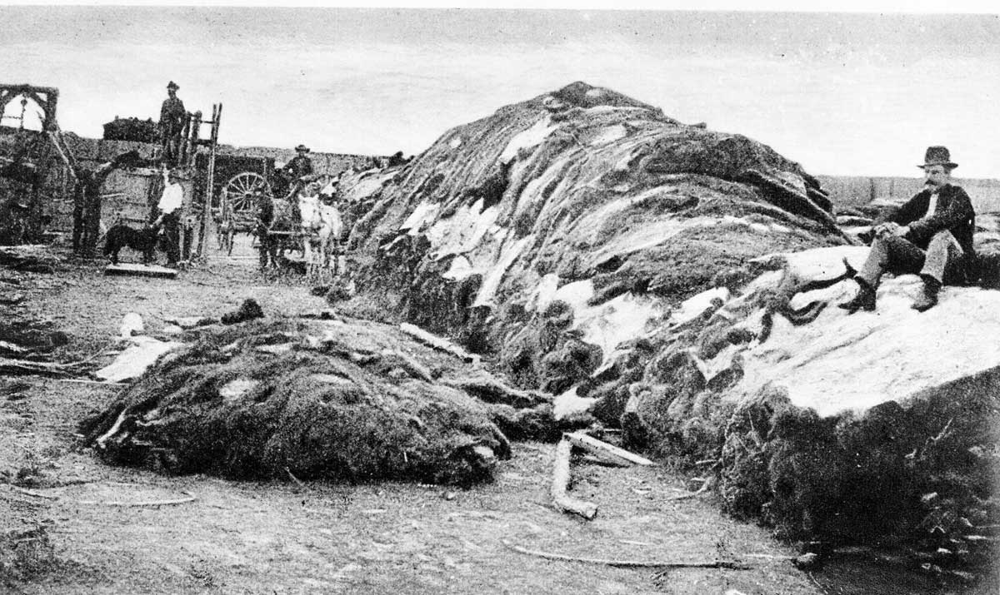

A visualization of the Great Buffalo Collapse, 1800–1900

In 1800, an estimated 30 million buffalo roamed the North American plains. By 1900, fewer than 500 remained.
This collapse was not natural. Commercial hunting, military campaigns, and government policy destroyed the foundation of Plains Indigenous life on purpose.
The Métis, who depended on buffalo for food, clothing, and trade, saw their world disappear in a single lifetime.
Scroll to witness the collapse. Click citation numbers [n] for full sources.